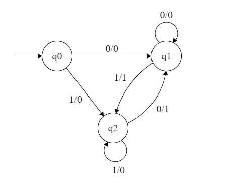

Moore Machines: Moore machines are finite state machines with output value and its output depends only on present state. It can be defined as (Q, q0, ∑, O, δ, λ) where:
- Q is finite set of states.
- q0 is the initial state.
- ∑ is the input alphabet.
- O is the output alphabet.
- δ is transition function which maps Q×∑ → Q.
- λ is the output function which maps Q → O.

In the moore machine shown in Figure 1, the output is represented with each input state separated by /. The length of output for a moore machine is greater than input by 1.
- Input: 11
- Transition: δ (q0,11)=> δ(q2,1)=>q2
- Output: 000 (0 for q0, 0 for q2 and again 0 for q2)
Mealy Machines: Mealy machines are also finite state machines with output value and its output depends on present state and current input symbol. It can be defined as (Q, q0, ∑, O, δ, λ’) where:
- Q is finite set of states.
- q0 is the initial state.
- ∑ is the input alphabet.
- O is the output alphabet.
- δ is transition function which maps Q×∑ → Q.
- ‘λ’ is the output function which maps Q×∑→ O.

In the mealy machine shown in Figure 1, the output is represented with each input symbol for each state separated by /. The length of output for a mealy machine is equal to the length of input.
- Input:11
- Transition: δ (q0,11)=> δ(q2,1)=>q2
- Output: 00 (q0 to q2 transition has Output 0 and q2 to q2 transition also has Output 0)
Conversion from Mealy to Moore Machine
Let us take the transition table of mealy machine shown in Figure 2.
| Input=0 | Input=1 | |||
| Present State | Next State | Output | Next State | Output |
| q0 | q1 | 0 | q2 | 0 |
| q1 | q1 | 0 | q2 | 1 |
| q2 | q1 | 1 | q2 | 0 |
Table 1
Step 1. First find out those states which have more than 1 outputs associated with them. q1 and q2 are the states which have both output 0 and 1 associated with them.
Step 2. Create two states for these states. For q1, two states will be q10 (state with output 0) and q11 (state with output 1). Similarly for q2, two states will be q20 and q21.
Step 3. Create an empty moore machine with new generated state. For moore machine, Output will be associated to each state irrespective of inputs.
| Input=0 | Input=1 | ||
| Present State | Next State | Next State | Output |
| q0 | |||
| q10 | |||
| q11 | |||
| q20 | |||
| q21 |
Table 2
Step 4. Fill the entries of next state using mealy machine transition table shown in Table 1. For q0 on input 0, next state is q10 (q1 with output 0). Similarly, for q0 on input 1, next state is q20 (q2 with output 0). For q1 (both q10 and q11) on input 0, next state is q10. Similarly, for q1(both q10 and q11), next state is q21. For q10, output will be 0 and for q11, output will be 1. Similarly, other entries can be filled.
| Input=0 | Input=1 | ||
| Present State | Next State | Next State | Output |
| q0 | q10 | q20 | 0 |
| q10 | q10 | q21 | 0 |
| q11 | q10 | q21 | 1 |
| q20 | q11 | q20 | 0 |
| q21 | q11 | q20 | 1 |
Table 3
This is the transition table of moore machine shown in Figure 1.
Conversion from moore machine to mealy machine
Let us take the moore machine of Figure 1 and its transition table is shown in Table 3.
Step 1. Construct an empty mealy machine using all states of moore machine as shown in Table 4.
| Input=0 | Input=1 | |||
| Present State | Next State | Output | Next State | Output |
| q0 | ||||
| q10 | ||||
| q11 | ||||
| q20 | ||||
| q21 | ||||
Table 4
Step 2: Next state for each state can also be directly found from moore machine transition Table as:
| Input=0 | Input=1 | |||
| Present State | Next State | Output | Next State | Output |
| q0 | q10 | q20 | ||
| q10 | q10 | q21 | ||
| q11 | q10 | q21 | ||
| q20 | q11 | q20 | ||
| q21 | q11 | q20 | ||
Table 5
Step 3: As we can see output corresponding to each input in moore machine transition table. Use this to fill the Output entries. e.g.; Output corresponding to q10, q11, q20 and q21 are 0, 1, 0 and 1 respectively.
| Input=0 | Input=1 | |||
| Present State | Next State | Output | Next State | Output |
| q0 | q10 | 0 | q20 | 0 |
| q10 | q10 | 0 | q21 | 1 |
| q11 | q10 | 0 | q21 | 1 |
| q20 | q11 | 1 | q20 | 0 |
| q21 | q11 | 1 | q20 | 0 |
Table 6
Step 4: As we can see from table 6, q10 and q11 are similar to each other (same value of next state and Output for different Input). Similarly, q20 and q21 are also similar. So, q11 and q21 can be eliminated.
| Input=0 | Input=1 | |||
| Present State | Next State | Output | Next State | Output |
| q0 | q10 | 0 | q20 | 0 |
| q10 | q10 | 0 | q21 | 1 |
| q20 | q11 | 1 | q20 | 0 |
Table 7
This is the same mealy machine shown in Table 1. So we have converted mealy to moore machine and converted back moore to mealy.
Note: Number of states in mealy machine can’t be greater than number of states in moore machine.
Example: The Finite state machine described by the following state diagram with A as starting state, where an arc label is x / y and x stands for 1-bit input and y stands for 2- bit output?

Outputs the sum of the present and the previous bits of the input.
- Outputs 01 whenever the input sequence contains 11.
- Outputs 00 whenever the input sequence contains 10.
- None of these.
Solution: Let us take different inputs and its output and check which option works:
Input: 01
Output: 00 01 (For 0, Output is 00 and state is A. Then, for 1, Output is 01 and state will be B)
Input: 11
Output: 01 10 (For 1, Output is 01 and state is B. Then, for 1, Output is 10 and state is C)
As we can see, it is giving the binary sum of present and previous bit. For first bit, previous bit is taken as 0.